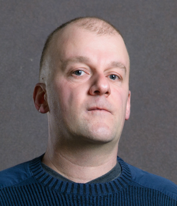

People

Robert Grimm
Researcher

Jakob Hain
PhD Student

Joel Jakubovic
Postdoctoral Researcher

Matěj Kocourek
PhD Student

Jan Kofroň
Professor

Mickael Laurent
Postdoctoral Researcher
Lucie Lerch
Administrator

Pavel Parízek
Professor

Tomáš Petříček
Professor
Anastasija Skotorenko
Research Assistant

Jan Vitek
Professor

Martin Blicha
Researcher

Alek Boruch-Gruszecki
Researcher
Vincent Holliday
Research Assistant
Václav Ježek
Researcher

Florian Sihler
Visitor
Professor. PI. Works on the design and implementation of programming languages. Led the implementation of the first real-time Java virtual machine to be flight-tested. Co-proposed Ownership Types. Former chair of ACM SIGPLAN.
Researcher. Research focuses on SMT solving, Constrained Horn Clauses, model checking, and software verification. Developed OpenSMT, Yaga, and Golem solvers. CAV Distinguished Paper Award 2023.
Researcher. Works on type systems, type inference, capture tracking, and programming language theory. Completed his PhD under Martin Odersky.
Researcher. Former Associate Professor at NYU. Research focuses on leveraging programming language technologies to make complex systems easier to build, maintain, and extend.
PhD Student. Works on programming languages and software engineering, including the JIT compiler for the R programming language.
Vincent Holliday
Research Assistant.
Postdoctoral Researcher. Studies programming systems designed to align with human cognitive strengths, emphasizing notational freedom and graphical constraint programming. PhD from the University of Kent.
Václav Ježek
Researcher.
Matěj Kocourek
PhD Student. Works on a Copy-and-Patch Just-in-Time Compiler for R.
Professor. Research focuses on software verification, code model checking, source code verification and analysis, and security of web applications.
Postdoctoral Researcher. Works on formalization of an intermediate representation for dynamic languages and application to JIT compilation of R. PhD from Université Paris-Cité. First place, 2025 GDR GPL Thesis Award.
Lucie Lerch
Administrator. Project coordination and administrative support.
Professor. Develops methods and tools for practical program analysis, verification, and debugging, with focus on techniques that scale to large multi-threaded programs.
Professor. Interested in understanding the nature of programming and finding new ways of doing it, using methods from theoretical PL research, open-source work, and interdisciplinary approaches. PhD from Cambridge.
Visitor. PhD student at Ulm University. Works on flowR, a hybrid dataflow analysis framework and static program slicer for the R programming language. Winner of the YoungRSE award at deRSE24.
Anastasija Skotorenko
Research Assistant.